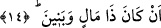
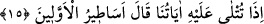

çocuğun karakterine etki ettiğine göre herhangi bir anneden süt emen çocuk ekseriyetle o
kadının iyi veya kötü ahlâkı ne ise bundan etkilenmektedir. Şu hâlde zinâ etmiş olan bir
kadından emen çocuğun durumunu varın siz hesap edin. Şu hâlde bir insanın zâhiren
sâlih olmasına ve sûreten bâzı değerleri elde etmiş olmasına itibar yoktur. Bir hadis-i
şerifte Peygamber Efendimiz şöyle der: “Ben nikâhsız değil nikâhlı bir birleşmenin
sonucunda dünyaya geldim.” [49] Diğer bütün peygamberler ve evliyâ-yı kiram (k.s.)
aynen Hz. Peygamber (s.a.) gibidirler. Zinâ bir yönden kâfirlikten daha çirkindir. Çünkü
Allah ölüden canlı çıkarır. Yâni kâfirden mü’min yaratır. Fakat zâniden reşid yaratmaz.
Zinâ çocuğu sûreten velâyet için elverişli olsa da gerçek velâyet için uygun olmaz.
İfâde olunduğuna göre bu âyet-i kerîme Ahnes b. Şerik hakkında nâzil olmuştur. Bu
kişinin gerçek adı Übeyy idi. Kendisi Kureyş içinde yaşamakla birlikte Sakifli olup
Mustalık oğullarından idi. Bu nedenle âyette Ahnes kasdedilerek “zenim” denmesi, bu
kişinin nesebinden dolayı zemmedilmesinden değil, fakat kendisinin tanıtılmak
istenmesinden dolayıdır. Bu bilgiyi Süheyli zikreder. İbn Atiyye’nin görüşüne göre
âyette yer alan “zenim” lâfzının zâhiri burada zikredilen sıfatları taşıyan bütün herkesin
kasdedildiğini göstermektedir. Burada yer alan niteliklerle hitâb, zaman durdukça
devam edip gidecektir. Özellikle müslümanların işlerini çekip çevirmeye görevli olan
yöneticiler bu niteliklere muhatap olacaklardır.
Fethu’r-Rahman’da bu âyetler tefsir olunurken şu ifâdeler yer alıyor: Âyette yer alan
bu tertib ancak ve ancak o nitelikleri vasfeden Allah’ın sözünde mevcuddur. Yoksa bu
niteliklerin söz konusu kişide aynı tertib üzere bulunması gerekmez. Değilse kişinin,
kaba ve haşin olma niteliğinden önce her türlü hayrı engelleme sıfatı ile sıfatlanmış
olması gerekirdi. Burhânu’l-Kur’an’da ifâde olunduğuna göre “hallâf” yâni çok yemin
eden sıfatından “zenim” sıfatına kadar dokuz sıfat sıralanmakta olup bunların arasına
atıf vavı getirilmediği gibi yedinci sıfattan sonra da getirilmemiştir. İşte bu durum,
vâvu’s-semâniye iddiâsının zayıf bir iddiâ olduğunun doğruluğunu göstermektedir.
14. Mal ve oğulları vardır diye (sakın boyun eğme.)
Bu ifâde yukarda geçen “la tu’ti’: itâat etme” fiiline bağlıdır ve bu ibârenin başında
harf-i cerr mahzuftur. Buna göre âyet-i kerîmenin mânâsı; “o kişi çok mal sâhibi ve
çocukları ile övünüyor diye sen ona itâat etme” demektir.
15. Ona âyetlerimiz okunduğu zaman o, «Öncekilerin masalları!» der.
Bu cümle isti’nâfiye’dir. Ta’lîl yâni sebep bildirme yerinde kullanılmıştır. Bir başka